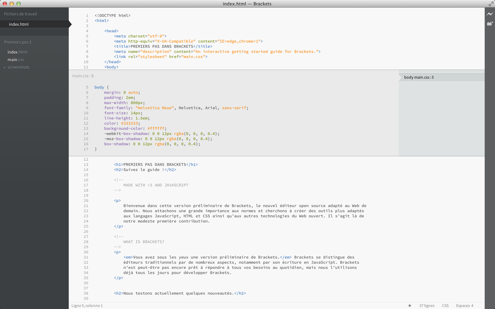

Bienvenue dans Brackets, un éditeur de code open source qui comprend et facilite la conception de sites web. Il s’agit d’un éditeur à la fois léger et puissant qui intègre des outils visuels directement dans son interface, de sorte que chaque opération peut devenir un véritable jeu d’enfant.
Brackets se distingue des éditeurs traditionnels, notamment par ses fonctionnalités uniques, comme l’Edition rapide ou l’Aperçu en direct, que vous ne trouverez pas forcément dans d’autres éditeurs. Cerise sur le gâteau, Brackets est écrit en JavaScript, en HTML et en CSS. Autrement dit, la grande majorité des utilisateurs de Brackets est capable de modifier et d’étendre l’éditeur. En fait, nous utilisons Brackets tous les jours pour son propre développement. Pour en savoir plus sur l’utilisation de ses fonctionnalités centrales, poursuivez votre lecture.
Pour éditer votre propre code à l’aide de l’application Brackets, il vous suffit d’ouvrir le dossier contenant vos fichiers. Brackets traite le dossier ouvert en tant que « projet » ; ainsi, les fonctionnalités Indicateurs de code, Aperçu en direct ou encore Edition rapide s’appliquent uniquement aux fichiers du dossier ouvert.
Si vous vous sentez prêt à franchir le cap et à éditer votre propre code, fermez cet exemple de projet et utilisez la liste déroulante de la barre latérale de gauche pour changer de dossier. Pour le moment, la liste déroulante s’intitule « Prise en main », ce qui correspond au dossier dans lequel se trouve le fichier fictif sur lequel vous vous exercez actuellement. Cliquez sur la liste déroulante et sélectionnez « Ouvrir un dossier… » pour accéder à votre propre dossier. Par la suite, vous pourrez tout à fait revenir aux dossiers précédemment ouverts, y compris cet exemple de projet, grâce à cette même liste déroulante.Vous ne risquez plus de perdre de vue le contexte en passant d’un document à un autre. Lorsque vous modifiez un fichier HTML, utilisez le raccourci Cmd/Ctrl + E pour ouvrir un éditeur rapide intégré qui affiche l’ensemble du code CSS associé. Peaufinez votre CSS, puis appuyez sur Echap pour revenir au format HTML, ou laissez simplement les règles CSS ouvertes afin qu’elles deviennent partie intégrante de l’éditeur HTML. Si vous appuyez sur Echap en dehors d’un éditeur intégré rapide, tous les éditeurs sont réduits. La fonction Edition rapide détecte également les règles définies dans les fichiers LESS et SCSS, y compris les règles imbriquées.
Une petite démonstration ? Placez le curseur de la souris sur la balise et tapez Cmd/Ctrl + E. Un éditeur rapide CSS apparaît en superposition, avec la règle CSS applicable. La fonction Edition rapide est également utilisable pour les attributs de classe et d’ID. Vous pouvez aussi vous en servir sur vos fichiers LESS et SCSS. Vous pouvez créer de nouvelles règles en procédant de la même manière. Cliquez sur l’une des balises en haut du document et appuyez sur Cmd/Ctrl + E. Il n’existe aucune règle associée pour le moment, mais vous pouvez cliquer sur le bouton Nouvelle règle afin d’ajouter une règle pour . Vous pouvez utiliser le même raccourci pour éditer d’autres éléments, comme les fonctions dans JavaScript, les couleurs ou les fonctions de temporisation d’animation ; nous ajoutons sans cesse des nouveautés.
Les éditeurs intégrés ne peuvent pas encore être imbriqués. Vous ne pouvez donc utiliser la fonction Edition rapide que lorsque le curseur se trouve dans un éditeur « plein écran ».
Depuis des années, nous pratiquons tous la fameuse technique « Enregistrer/Actualiser » : apporter des modifications dans l’éditeur, enregistrer, basculer vers le navigateur, puis actualiser la page pour voir le résultat. Avec Brackets, cette longue procédure appartient au passé.
Brackets se connecte en direct à votre navigateur local et transmet vos mises à jour au fur et à mesure que vous les appliquez au code HTML et CSS. Certes, il existe des outils accessibles directement depuis le navigateur qui permettent d’obtenir un résultat similaire mais, avec Brackets, vous n’avez pas besoin de copier et coller à nouveau le code final dans l’éditeur. Le navigateur lit votre code, mais c’est l’éditeur qui le fait vivre !
Avec Brackets, vous pouvez facilement visualiser les effets des modifications du code HTML et CSS sur la page. Lorsque vous placez le curseur sur une règle CSS, Brackets surligne tous les éléments concernés dans le navigateur. De même, lorsque vous éditez un fichier HTML, Brackets surligne les éléments HTML correspondants dans le navigateur.
Si vous avez installé Google Chrome, vous pouvez dès maintenant tester cette fonctionnalité. Cliquez sur l’icône représentant un éclair en haut à droite de la fenêtre Brackets ou utilisez la combinaison Cmd/Ctrl + Alt + P. Lorsque le module Aperçu en direct est activé sur un document HTML, tous les documents CSS associés peuvent être modifiés en temps réel. L’icône passe du gris au doré une fois que Brackets a établi la connexion à votre navigateur. Placez maintenant le curseur sur la balise . Vous constatez qu’une surbrillance bleue apparaît tout autour de l’image dans Chrome. Utilisez ensuite la combinaison Cmd/Ctrl + E pour ouvrir les règles CSS définies. Essayez de faire passer l’épaisseur de la bordure de 10 px à 20 px, ou de remplacer la couleur d’arrière-plan « transparent » par « hotpink ». Si Brackets et votre navigateur s’exécutent côte à côte, ce dernier affiche immédiatement les modifications. Plutôt sympathique, non ?A l’heure actuelle, le module Aperçu en direct de Brackets ne fonctionne que pour le code HTML et CSS. Cependant, dans cette version, les modifications apportées aux fichiers JavaScript sont automatiquement rechargées lorsque vous enregistrez. Nous travaillons activement à la prise en charge du module Aperçu en direct pour le langage JavaScript. La fonctionnalité Aperçu en direct n’est disponible qu’avec Google Chrome, mais nous souhaitons à l’avenir la déployer sur l’ensemble des navigateurs.
Pour ceux d’entre nous qui n’ont pas encore mémorisé les équivalents en couleur des valeurs HEX ou RVB, Brackets permet d’afficher rapidement et facilement la couleur utilisée. Dans le code CSS ou HTML, placez simplement le curseur sur une valeur colorimétrique ou un dégradé, et Brackets affiche automatiquement un aperçu de la couleur ou du dégradé en question. Procédez de même pour les images : placez simplement le curseur sur le lien d’une image dans l’éditeur Brackets pour en afficher une miniature.
Testez la fonction Affichage rapide par vous-même : placez le curseur sur la balise en haut du document et appuyez sur Cmd/Ctrl + E pour ouvrir un éditeur rapide CSS. A présent, placez le curseur sur l’une des valeurs de couleur dans le code CSS. Vous pouvez également tester cette fonctionnalité sur un dégradé : ouvrez un éditeur rapide CSS sur la balise , puis passez le curseur sur l’une des valeurs de l’image d’arrière-plan. Pour essayer l’aperçu avec une image, placez le curseur sur la capture d’écran insérée plus haut dans le document.En plus de tous les atouts déjà intégrés à Brackets, notre communauté de développeurs, qui ne cesse de s’agrandir, a mis au point des centaines d’extensions qui offrent des fonctionnalités très pratiques. Si vous avez besoin d’une fonction qui ne se trouve pas dans Brackets, il est fort probable qu’un utilisateur ait créé l’extension qu’il vous faut. Pour parcourir la liste des extensions disponibles ou en rechercher une en particulier, cliquez sur Fichier > Gestionnaire d’extensions, puis ouvrez l’onglet « Disponible ». Lorsque vous trouvez l’extension qui vous convient, il vous suffit de cliquer sur le bouton Installer correspondant.
Brackets est un projet open source. Des développeurs web du monde entier participent à l’amélioration de l’éditeur de code. Nombreux sont ceux qui créent des extensions afin de développer les possibilités de Brackets. Donnez-nous votre avis, partagez vos idées ou participez directement au projet.